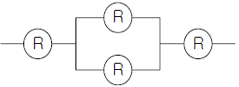
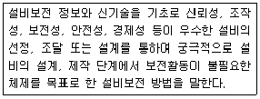
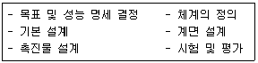
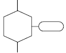
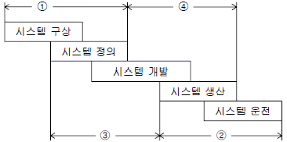
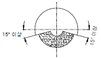
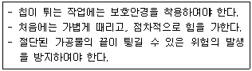
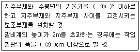
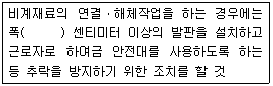

산업안전기사 (2012-03-04 기출문제)
1과목: 안전관리론
1. 다음 중 무재해운동의 이념에 있어 모든 잠재위험요인을 사전에 발견ㆍ파악ㆍ해결함으로써 근원적으로 산업재해를 없앤다는 원칙에 해당하는 것은?
- 참가의 원칙
- 인간존중의 원칙
- 무의 원칙
- 선취의 원칙
(정답률: 73%)

2. 다음 중 산업재해의 발생 원인에 있어 간접적 원인에 해당되지 않는 것은?
- 물적 원인
- 기술적 원인
- 정신적 원인
- 교육적 원인
(정답률: 80%)
3. 다음 중 산업안전보건법상 안전검사 대상 유해ㆍ위험 기계에 해당하는 것은?(2022년 03월 08일 개정된 규정 적용됨)
- 크레인(정격 하중이 2톤 미만)
- 이동식 국소배기장치
- 밀폐형 롤러기
- 산업용 원심기
(정답률: 71%)
4. 다음 중 근로자가 물체의 낙하 또는 비래 및 추락에 의한 위험을 방지 또는 경감하고, 머리부위 감전에 의한 위험을 방지하고자 할 때 사용하여야 하는 안전모의 종류로 가장 적합한 것은?
- A형
- AB형
- ABE형
- AE형
(정답률: 78%)
5. 다음 중 리더십 이론에서 성공적인 리더는 어떤 특성을 가지고 있는가를 연구하는 이론은?
- 특성이론
- 행동이론
- 상황적합성이론
- 수명주기이론
(정답률: 72%)
6. 산업안전보건법에 따라 자율안전확인대상 기계ㆍ기구 등의 안전에 관한 성능이 자율안전기준에 맞지 아니하게 된 경우에는 관련 사항을 신고한 자에게 몇 개월 이내의 기간을 정하여 자율안전확인표시의 사용을 금지하거나 자율안전기준에 맞게 개선하도록 명할 수 있는가?
- 1개월
- 3개월
- 6개월
- 12개월
(정답률: 69%)
7. 다음 중 알더퍼(Alderfer)의 ERG 이론에서 제시한 인간의 3가지 욕구에 해당하는 것은?
- Growth 욕구
- Rationalization 욕구
- Economy 욕구
- Environment 욕구
(정답률: 64%)
8. 안전보건관리의 조직형태 중 경영자의 지휘와 명령이 위에서 아래로 하나의 계통이 되어 신속히 전달되며 100명 이하의 소규모 기업에 적합한 유형은?
- staff 조직
- line 조직
- line-staff 조직
- round 조직
(정답률: 84%)
9. 다음 중 산업안전보건법상 사업 내 안전ㆍ보건교육에 있어 탱크 내 또는 환기가 극히 불량한 좁은 밀폐된 장소에서 용접작업을 하는 근로자에게 실시하여야하는 특별안전ㆍ보건교육의 내용에 해당하지 않는 것은? (단, 기타 안전ㆍ보건관리에 필요한 사항은 제외한다.)
- 환기설비에 관한 사항
- 작업환경 점검에 관한 사항
- 질식 시 응급조치에 관한 사항
- 안전기 및 보호구 취급에 관한 사항
(정답률: 63%)
10. 다음 중 안전교육계획 수립시 포함하여야 할 사항과 가장 거리가 먼 것은?
- 교재의 준비
- 교육기간 및 시간
- 교육의 종류 및 교육대상
- 교육담당자 및 강사
(정답률: 68%)
11. 다음 중 재해통계에 있어 강도율이 2.0 인 경우에 대한 설명으로 옳은 것은?
- 한 건의 재해로 인해 전제 작업비용의 2.0%에 해당하는 손실이 발생하였다.
- 근로자 1000명당 2.0건의 재해가 발생하였다.
- 근로시간 1000시간당 2.0건의 재해가 발생하였다.
- 근로시간 1000시간당 2.0일의 근로손실이 발생하였다.
(정답률: 76%)
12. 다음 중 집단에서의 인간관계 메커니즘(Mechanism)과 가장 거리가 먼 것은?
- 동일화, 일체화
- 커뮤니케이션, 공감
- 모방, 암시
- 분열, 강박
(정답률: 77%)
13. 교육심리학의 기본이론 중 학습지도의 원리에 속하지 않는 것은?
- 직관의 원리
- 개별화의 원리
- 사회화의 원리
- 계속성의 원리
(정답률: 62%)
14. 안전교육방법 중 동기유발요인에 영향을 미치는 요소와 가장 거리가 먼 것은?
- 책임
- 참여
- 성과
- 회피
(정답률: 83%)
15. 다음 중 위험예지훈련에 있어 Touch and call에 관한 설명으로 가장 적절한 것은?
- 현장에서 팀 전원이 각자의 왼손을 맞잡아 원을 만들어 팀 행동목표를 지적확인하는 것을 말한다.
- 현장에서 그때 그 장소의 상황에서 즉응하여 실시하는 위험예지활동으로 즉시즉응법이라고도 한다.
- 작업자가 위험작업에 임하여 무재해를 지향하겠다는 뜻을 큰소리로 호칭하면서 안전의식수준을 제고하는 기법이다.
- 한 사람 한 사람의 위험에 대한 감수성 향상을 도모하기 위한 삼각 및 원포인트 위험예지훈련을 통합한 활용기법이다.
(정답률: 80%)
16. 산업안전보건법상 안전ㆍ보건표지의 종류 중 관계자외 출입금지표지에 해당하는 것은?
- 안전모 착용
- 석면취급 및 해체ㆍ제거
- 폭발성물질 경고
- 방사성물질 경고
(정답률: 79%)
17. 인간의 특성 중 판단과정의 착오요인에 해당되지 않는 것은?
- 합리화
- 정서불안정
- 작업조건불량
- 정보부족
(정답률: 47%)
18. A 사업장에서 사망이 2건 발생하였다면 이 사업장에서 경상 재해는 몇 건이 발생하겠는가? (단, 하인리히의 재해구성비율을 따른다.)
- 30건
- 58건
- 60건
- 600건
(정답률: 81%)
19. 안전교육 중 프로그램 학습법의 장점으로 볼 수 없는 것은?
- 학습자의 학습 과정을 쉽게 알 수 있다.
- 지능, 학습속도 등 개인차를 충분히 고려할 수 있다.
- 매 반응마다 피드백이 주어지기 때문에 학습자가 흥미를 가질 수 있다.
- 여러 가지 수업 매체를 동시에 다양하게 활용할 수 있다.
(정답률: 73%)
20. 다음 중 시몬즈(Simonds)의 재해손실비용 산정 방식에 있어 비보험코스트에 포함되지 않는 것은?
- 영구 전노동불능 상해
- 영구 부분노동불능 상해
- 일시 전노동불능 상해
- 일시 부분노동불능 상해
(정답률: 71%)
2과목: 인간공학 및 시스템안전공학
21. 인간의 반응시간을 조사하는 실험에서 0.1, 0.2, 0.3, 0.4 의 점등확률을 갖는 4개의 전등이 있다. 이 자극 전등이 전달하는 정보량은 약 얼마인가?
- 2.42 bit
- 2.16 bit
- 1.85 bit
- 1.53 bit
(정답률: 44%)
22. 각 부품의 신뢰도가 R 인 다음과 같은 시스템의 전체 신뢰도는?

- R4
- 2R - R2
- 2R2 - R3
- 2R3 - R4
(정답률: 61%)
23. 다음 중 고장형태와 영향분석(FMEA)에 관한 설명으로 틀린 것은?
- 각 요소가 영향의 해석이 가능하기 때문에 동시에 2가지 이상의 요소가 고장 나는 경우에 적합하다.
- 해석영역이 물체에 한정되기 때문에 인적원인 해석이 곤란하다.
- 양식이 간단하여 특별한 훈련 없이 해석이 가능하다.
- 시스템 해석의 기법은 정성적, 귀납적 분석법 등에 사용한다.
(정답률: 55%)
24. 다음 중 서서하는 작업에서 정밀한 작업, 경작업, 중작업 등을 위한 작업대의 높이에 기준이 되는 신체부위는?
- 어깨
- 팔꿈치
- 손목
- 허리
(정답률: 74%)
25. 다음 중 인간의 귀에 대한 구조를 설명한 것으로 틀린 것은?(오류 신고가 접수된 문제입니다. 반드시 정답과 해설을 확인하시기 바랍니다.)
- 외이(external ear)는 귓바퀴와 외이도로 구성된다.
- 중이(middle ear)에는 인두와 교통하여 고실 내압을 조절하는 유스타키오관이 존재한다.
- 내이(inner ear)는 신체의 평형감각수용기인 반규관과 청각을 담당하는 전정기관 및 와우로 구성어 있다.
- 고막은 중이와 내이의 경계부위에 위치해 있으며 음파를 진동으로 바꾼다.
(정답률: 64%)
26. 국내 규정상 최대 음압수준이 몇 dB(A)를 초과하는 충격소음에 노출되어서는 아니 되는가?
- 110
- 120
- 130
- 140
(정답률: 56%)
27. 다음 설명에 해당하는 설비보전방식의 유형은?

- 개량 보전
- 사후 보전
- 일상 보전
- 보전 예방
(정답률: 75%)
28. 다음 중 인체측정과 작업공간의 설계에 관한 설명으로 옳은 것은?
- 구조적 인체 치수는 움직이는 몸의 자세로부터 측정한 것이다.
- 선반의 높이, 조작에 필요한 힘 등을 정할 때에는 인체 측정치의 최대집단치를 적용한다.
- 수평 작업대에서의 정상작업영역은 상완을 자연스럽게 늘어뜨린 상태에서 전완을 뻗어 파악할 수 있는 영역을 말한다.
- 수평 작업대에서의 최대작업영역은 다리를 고정시킨 후 최대한으로 파악할 수 있는 영역을 말한다.
(정답률: 66%)
29. 체계 설계 과정의 주요 단계가 다음과 같을 때 인간ㆍ하드웨어ㆍ소프트웨어의 기능 할당, 인간성능 요건 명세, 직무분석, 작업설계 등의 활동을 하는 단계는?

- 체계의 정의
- 기본 설계
- 계면 설계
- 촉진물 설계
(정답률: 74%)
30. 다음 중 path set에 관한 설명으로 옳은 것은?
- 시스템의 약점을 표현한 것이다.
- Top 사상을 발생시키는 조합이다.
- 시스템이 고장 나지 않도록 하는 사상의 조합이다.
- 일반적으로 Fussell Algorithm을 이용한다.
(정답률: 77%)
31. 다음 중 휴먼에러(Human Error)의 심리적 요인으로 옳은 것은?
- 일이 너무 복잡한 경우
- 일의 생산성이 너무 강조될 경우
- 동일 형상의 것이 나란히 있을 경우
- 서두르거나 절박한 상황에 놓여있을 경우
(정답률: 79%)
32. 다음 중 정량적 자료를 정성적 판독의 근거로 사용하는 경우로 볼 수 없는 것은?
- 미리 정해 놓은 몇 개의 한계범위에 기초하여 변수의 상태나 조건을 판정할 때
- 목표로 하는 어떤 범위의 값을 유지할 때
- 변화 경향이나 변화율을 조사하고자 할 때
- 세부 형태를 확대하여 동일한 시각을 유지해 주어야 할 때
(정답률: 45%)
33. FT도에 사용되는 다음 기호의 명칭으로 옳은 것은?

- 억제 게이트
- 부정 게이트
- 생략사상
- 전이기호
(정답률: 73%)
34. 다음 중 결함위험분석(FHA, fault hazard analysis)의 적용 단계로 가장 적절한 것은?

- ①
- ②
- ③
- ④
(정답률: 61%)
35. 화학설비의 안전성 평가단계 중 “관계 자료의 작성준비”에 있어 관계 자료의 조사항목과 가장 관계가 먼 것은?
- 입지에 관한 도표
- 온도, 압력
- 공정기기목록
- 화학설비 배치도
(정답률: 61%)
36. 다음 중 인간공학을 나타내는 용어로 적절하지 않은 것은?
- human factors
- ergonomics
- human engineering
- customize engineering
(정답률: 71%)
37. 다음 중 실효온도(Effective Temperature)에 대한 설명으로 틀린 것은?
- 체온계로 입안의 온도를 측정하여 기준으로 한다.
- 실제로 감각되는 온도로서 실감온도라고 한다.
- 온도, 습도 및 공기 유동이 인체에 미치는 열효과를 나타낸 것이다.
- 상대습도 100% 일 때의 건구온도에서 느끼는 것과 동일한 온감이다.
(정답률: 71%)
38. 다음 중 인간이 현존하는 기계보다 우월한 기능이 아닌 것은?
- 귀납적으로 추리한다.
- 원칙을 적용하여 다양한 문제를 해결한다.
- 다양한 경험을 토대로 하여 의사 결정을 한다.
- 명시된 절차에 따라 신속하고, 정량적인 정보처리를 한다.
(정답률: 79%)
39. 발생확률이 각각 0.⑤, 0.08 인 두 결함사상이 AND 조합으로 연결된 시스템을 FTA로 분석하였을 때 이 시스템의 신뢰도는 약 얼마인가?
- 0.004
- 0.126
- 0.874
- 0.996
(정답률: 56%)
40. 다음 중 시스템 안전관리의 주요 업무와 가장 거리가 먼 것은?
- 시스템 안전에 필요한 사항의 식별
- 안전활동의 계획, 조직 및 관리
- 시스템 안전활동 결과의 평가
- 생산시스템의 비용과 효과 분석
(정답률: 78%)
3과목: 기계위험방지기술
41. 다음 중 위험기계의 구동에너지를 작업자가 차단할 수 있는 장치에 해당하는 것은?
- 급정지장치
- 감속장치
- 위험방지장치
- 방호설비
(정답률: 78%)
42. 방호장치를 설치할 때 중요한 것은 기계의 위험점으로부터 방호장치까지의 거리이다. 위험한 기계의 동작을 제동시키는데 필요한 총소요시간을 t(초)라고 할 때 안전거리(S)의 산출식으로 옳은 것은?
- S = 1.0t mm/s
- S = 1.6t m/s
- S = 2.8t mm/s
- S = 3.2t m/s
(정답률: 76%)
43. 다음 중 산업안전보건법상 보일러에 설치되어 있는 압력방출장치의 검사주기로 옳은 것은?
- 분기별 1회 이상
- 6개월에 1회 이상
- 매년 1회 이상
- 2년마다 1회 이상
(정답률: 59%)
44. 다음 중 설비의 내부에 균열 결함을 확인할 수 있는 가장 적절한 검사방법은?
- 육안검사
- 액체침투탐상검사
- 초음파탐상검사
- 피로검사
(정답률: 72%)
45. 연삭숫돌의 지름이 20cm이고, 원주속도가 250m/min일 때 연삭숫돌의 회전수는 약 얼마인가?
- 397.89 rpm
- 403.25 rpm
- 393.12 rpm
- 406.80 rpm
(정답률: 64%)
46. 다음 중 프레스 또는 전단기 방호장치의 종류와 분류 기호가 올바르게 연결된 것은?
- 광전자식 : D-1
- 양수조작식 : A-1
- 가드식 : C
- 손쳐내기식 : B
(정답률: 65%)
47. 기계설비가 이상이 있을 때 기계를 급정지시키거나 방호장치가 작동되도록 하는 것과 전기회로를 개선하여 오동작을 방지하거나 별도의 완전한 회로에 의해 정상기능을 찾을 수 있도록 하는 것은?
- 구조부분 안전화
- 기능적 안전화
- 보전작업 안전화
- 외관상 안전화
(정답률: 69%)
48. 다음 중 산업안전보건법상 크레인에 전용 탑승설비를 설치하고 근로자를 달아 올린 상태에서 작업에 종사시킬 경우 근로자의 추락 위험을 방지하기 위하여 실시해야할 조치사항으로 적합하지 않은 것은?
- 승차석 외의 탑승 제한
- 안전대나 구명줄의 설치
- 탑승설비의 하강시 동력하강방법을 사용
- 탑승설비가 뒤집히거나 떨어지지 않도록 필요한 조치
(정답률: 61%)
49. 다음 그림과 같은 연삭기 덮개의 용도로 가장 적절한 것은?

- 원통연삭기, 센터리스연삭기
- 휴대용 연삭기, 스윙연삭기
- 공구연삭기, 만능연삭기
- 평면연삭기, 절단연삭기
(정답률: 63%)
50. 재료의 강도시험 중 항복점을 알 수 있는 시험의 종류는?
- 압축시험
- 충격시험
- 인장시험
- 피로시험
(정답률: 66%)
51. SPM(stroke per minute)이 100 인 프레스에서 클러치 맞물림 개소수가 4인 경우 양수조작식 방호장치의 설치거리는 얼마인가?
- 160mm
- 240mm
- 300mm
- 720mm
(정답률: 46%)
52. 상용운전압력 이상으로 압력이 상승할 경우, 보일러의 과열을 방지하기 위하여 최고사용압력과 상용압력 사이에서 보일러의 버너 연소를 차단하여 열원을 제거하여 정상압력으로 유도하는 보일러의 방호장치는 무엇인가?
- 압력방출장치
- 고저수위조절장치
- 언로우드밸드
- 압력제한스위치
(정답률: 70%)
53. 다음 중 산업안전보건법상 컨베이어에 설치하는 방호장치가 아닌 것은?
- 비상정지장치
- 역주행방지장치
- 잠금장치
- 건널다리
(정답률: 66%)
54. [보기]와 같은 안전 수칙을 적용해야 하는 수공구는?

- 정
- 줄
- 쇠톱
- 스패너
(정답률: 76%)
55. 다음 중 기계설비에서 반대로 회전하는 두 개의 회전체가 맞닿는 사이에 발생하는 위험점을 무엇이라 하는가?
- 협착점(squeeze point)
- 물림점(nip point)
- 접선물림점(tangential point)
- 회전말림점(trapping point)
(정답률: 64%)
56. 다음 중 셰이퍼에서 근로자의 보호를 위한 방호장치가 아닌 것은?
- 방책
- 칩받이
- 칸막이
- 급속귀환장치
(정답률: 72%)
57. 다음 중 아세틸렌 용접장치에 사용되는 전용의 아세틸렌 발생기실의 구조에 관한 설명으로 틀린 것은?
- 지붕 및 천장에는 얇은 철판이나 가벼운 불연성 재료를 사용할 것
- 바닥면적의 1/16 이상의 단면적을 가진 배기통을 옥상으로 돌출시키고 그 개구부를 창 또는 출입구로부터 1.5m 이상 떨어지도록 할 것
- 벽과 발생기 사이에는 발생기의 조정 또는 카바이드 공급 등의 작업을 방해하지 아니하도록 간격을 확보 할 것
- 출입구의 문은 불연성 재료로 하고 두께 1.0mm이상의 철판이나 그 밖에 그 이상의 강도를 가진 구조로 할 것
(정답률: 56%)
58. 다음 중 수평거리 20m, 높이가 5m 인 경우 지게차의 안정도는 얼마인가?
- 20%
- 25%
- 30%
- 35%
(정답률: 73%)
59. 내압을 받고 있는 얇은 원통의 압력용기에서 원주방향 응력은 축방향 응력의 약 몇 배인가?
- 0.5
- 1.5
- 2
- 3
(정답률: 54%)
60. 다음 중 와전류비파괴검사법의 특징과 가장 거리가 먼 것은?
- 자동화 및 고속화가 가능하다.
- 측정치에 영향을 주는 인자가 적다.
- 가는 선, 얇은 판의 경우도 검사가 가능하다.
- 표면 아래 깊은 위치에 있는 결함은 검출이 곤란하다.
(정답률: 50%)
4과목: 전기위험방지기술
61. 활선 작업시 필요한 보호구 중 가장 거리가 먼 것은?
- 고무장갑
- 안전화
- 대전방지용 구두
- 안전모
(정답률: 61%)
62. 최고표면온도에 의한 폭발성가스의 분류와 방폭전기 기기의 온도등급 기호와의 관계를 올바르게 나타낸 것은?
- 200℃ 초과 300℃ 이하 : T2
- 300℃ 초과 450℃ 이하 : T3
- 450℃ 초과 600℃ 이하 : T4
- 600℃ 초과 : T5
(정답률: 58%)
63. 전기화재의 원인이 아닌 것은?
- 단락 및 과부하
- 절연불량
- 기구의 구조불량
- 누전
(정답률: 73%)
64. 정격사용율 30%, 정격2차전류 300A인 교류아크 용접기를 200A로 사용하는 경우의 허용사용률은?
- 67.5%
- 91.6%
- 110.3%
- 130.5%
(정답률: 60%)
65. 누전화재경보기에 사용하는 변류기에 대한 설명으로 잘못된 것은?
- 옥외 전로에는 옥외형을 설치
- 점검이 용이한 옥외 인입선의 부하측에 설치
- 건물의 구조상 부득이 하여 인입구에 근접한 옥내에 설치
- 수신부에 있는 스위치 1차측에 설치
(정답률: 47%)
66. 전기기기의 케이스를 전폐구조로 하며 접합면에는 일정치 이상의 깊이를 갖는 패킹을 하여 분진이 용기내로 침입하지 못하도록 한 구조는?
- 보통방진 방폭구조
- 분진특수 방폭구조
- 특수방진 방폭구조
- 분진 방폭구조
(정답률: 60%)
67. 감전사고 방지대책으로 옳지 않은 것은?
- 설비의 필요한 부분에 보호접지 실시
- 노출된 충전부에 통전망 설치
- 안전전압 이하의 전기기기 사용
- 전기기기 및 설비의 정비
(정답률: 65%)
68. 하나의 피뢰침 인하도선에 2개 이상의 접지극을 병렬접속 할 때 그 간격은 몇 [m] 이상이어야 하는가?
- 1
- 2
- 3
- 4
(정답률: 47%)
69. 인체의 전격시의 통전시간이 4초 일 때 심실세동 전류를 Dalziel 이 주장한 식으로 계산한 것으로 다음 중 알맞은 것은?
- 53mA
- 82.5mA
- 102.5mA
- 143mA
(정답률: 57%)
70. 방전의 종류 중 도체가 대전되었을 때 접지된 도체와의 사이에서 발생하는 강한 발광과 파괴음을 수반하는 방전을 무엇이라 하는가?
- 연면 방전
- 자외선 방전
- 불꽃 방전
- 스트리머 방전
(정답률: 62%)
71. 가스폭발위험이 있는 0종 장소에 전기기계ㆍ기구를 사용 할 때 요구되는 방폭구조는?
- 내압 방폭구조
- 압력 방폭구조
- 유입 방폭구조
- 본질안전 방폭구조
(정답률: 60%)
72. 다음은 전기안전에 관한 일반적인 사항을 기술한 것이다. 옳게 설명한 것은?(관련 규정 개정전 문제로 여기서는 기존 정답인 2번을 누르면 정답 처리됩니다. 자세한 내용은 해설을 참고하세요.)
- 220[V]동력용 전동기의 외함에 특별 제3종 접지공사를 하였다.
- 배선에 사용할 전선의 굵기를 허용전류, 기계적강도, 전압강하 등을 고려하여 결정하였다.
- 누전을 방지하기 위해 피뢰침 설비를 설치하였다.
- 전선 접속시 전선의 세기가 30[%] 이상 감소되었다.
(정답률: 72%)
73. 전기누전으로 인한 화재조사 시에 착안해야 할 입증 흔적과 관계없는 것은?
- 접지점
- 누전점
- 혼촉점
- 발화점
(정답률: 54%)
74. 인입개폐기(LS)를 개방하지 않고 전등용 변압기 1차측 COS만 개방 후 전등용 변압기 접속용 볼트 작업 중 동력용 COS에 접촉, 사망한 사고에 대한 원인과 거리가 먼 것은?
- 인입구 개폐기 미개방한 상태에서 작업
- 동력용 변압기 COS 미개방
- 안전장구 미사용
- 전등용 변압기 2차측 COS 미개방
(정답률: 66%)
75. 정전기 재해를 예방하기 위해 설치하는 제전기의 제전 효율은 설치시에 얼마 이상이 되어야 하는가?
- 50% 이상
- 70% 이상
- 90% 이상
- 100%
(정답률: 57%)
76. 다음 중 전격의 위험을 가장 잘 설명하고 있는 것은?
- 통전 전류가 크고, 주파수가 높고, 장시간 흐를수록 위험하다.
- 통전 전압이 높고, 주파수가 높고, 인체 저항이 낮을수록 위험하다.
- 통전 전류가 크고, 장시간 흐르고, 인체의 주요한 부분을 흐를수록 위험하다.
- 통전 전압이 높고, 인체저항이 높고, 인체의 주요한 부분을 흐를수록 위험하다.
(정답률: 69%)
77. 점전하가 절연유 속에 있는 경우 전계의 세기는 어떻게 변하겠는가? (단, ℇo는 진공의 유전율이며, ℇs는 비유전율이다.)
- 변화가 없다.
- 1/(ℇs)로 작아진다.
- ℇs 배로 커진다.
- ℇoℇs 배로 커진다.
(정답률: 47%)
78. 변압기의 중성점을 제2종 접지한 수전전압 22.9kV, 사용전압 220V인 공장에서 외함을 제3종 접지공사를 한 전동기가 운전 중에 누전되었을 경우에 작업자가 접촉될 수 있는 최소전압은 약 몇 [V]인가? (단, 1선 지락전류:10A, 제3종 접지저항:30Ω, 인체저항:10000Ω이다.)(관련 규정 개정전 문제로 여기서는 기존 정답인 2번을 누르면 정답 처리됩니다. 자세한 내용은 해설을 참고하세요.)
- 165.6[V]
- 146.7[V]
- 127.5[V]
- 116.7[V]
(정답률: 47%)
79. 보폭전압에서 지표상에 근접 격리된 두 점 간의 거리는?
- 0.5[m]
- 1.0[m]
- 1.5[m]
- 2.0[m]
(정답률: 54%)
80. 30kV에서 불꽃방전이 일어났다면 어떤 상태이었겠는가?
- 전극간격이 1cm 떨어진 침대침 전극
- 전극간격이 1cm 떨어진 평형판 전극
- 전극간격이 1mm 떨어진 평형판 전극
- 전극간격이 1mm 떨어진 침대침 전극
(정답률: 52%)
5과목: 화학설비위험방지기술
81. 메탄, 에탄, 프로판의 폭발하한계가 각각 5vol%, 3vol%, 2.5vol%일 때 다음 중 폭발하한계가 가장 낮은 것은? (단, Le chatelier법칙을 이용한다.)
- 메탄 50vol%, 에탄 30vol%, 프로판 20vol%의 혼합가스
- 메탄 40vol%, 에탄 30vol%, 프로판 30vol%의 혼합가스
- 메탄 30vol%, 에탄 30vol%, 프로판 40vol%의 혼합가스
- 메탄 20vol%, 에탄 30vol%, 프로판 50vol%의 혼합가스
(정답률: 55%)
82. 다음 중 위험물질에 대한 저장방법으로 적절하지 않은 것은?
- 탄화칼슘은 물 속에 저장한다.
- 벤젠은 산화성 물질과 격리시킨다.
- 금속나트륨은 석유 속에 저장한다.
- 질산은 통풍이 잘 되는 곳에 보관하고 물기와의 접촉을 금지한다.
(정답률: 69%)
83. 다음 중 분말 소화약제로 가장 적절한 것은?
- 사염화탄소
- 브롬화메탄
- 수산화암모늄
- 제1인산암모늄
(정답률: 67%)
84. 다음 중 인화점에 대한 설명으로 틀린 것은?
- 가연성 액체의 발화와 관계가 있다.
- 반드시 점화원의 존재와 관련된다.
- 연소가 지속적으로 확산될 수 있는 최저온도이다.
- 연료의 조성, 점도, 비중에 따라 달라진다.
(정답률: 47%)
85. 산업안전보건법에 따라 위험물 건조설비 중 건조실을 설치하는 건축물의 구조를 독립된 단층 건물로 하여야 하는 건조설비가 아닌 것은?
- 위험물 또는 위험물이 발생하는 물질을 가열ㆍ건조하는 경우 내용적이 1m3 이상인 건조설비
- 위험물이 아닌 물질을 가열ㆍ건조하는 경우 액체연료의 최대사용량이 5kg/h 이상인 건조설비
- 위험물이 아닌 물질을 가열ㆍ건조하는 경우 기체연료의 최대사용량이 1m3 /h 이상인 건조설비
- 위험물이 아닌 물질을 가열ㆍ건조하는 경우 전기사용 정격용량이 10kW 이상인 건조설비
(정답률: 50%)
86. 대기압에서 물의 엔탈피가 1kcal/kg 이었던 것이 가압하여 1.45kcal/kg을 나타내었다면 flash율은 얼마인가? (단, 물의 기화열은 540cal/g 이라고 가정한다.)
- 0.00083
- 0.0083
- 0.0015
- 0.015
(정답률: 52%)
87. 다음 중 분진폭발이 발생하는 순서로 옳은 것은?
- 퇴적분진 → 비산 → 분산 → 발화원 → 전면폭발 → 2차폭발
- 퇴적분진 → 발화원 → 분산 → 비산 → 전면폭발 → 2차폭발
- 비산 → 퇴적분진 → 분산 → 발화원 → 2차폭발 → 전면폭발
- 비산 → 분산 → 퇴적분진 → 발화원 → 2차폭발 → 전면폭발
(정답률: 75%)
88. 물이 관 속을 흐를 때 유동하는 물 속의 어느 부분의 정압이 그 때의 물의 증기압보다 낮을 경우 물이 증발하여 부분적으로 증기가 발생되어 배관의 부식을 초래하는 경우가 있다. 이러한 현상을 무엇이라 하는가?
- 수격작용(water hammering)
- 공동현상(cavitation)
- 서어징(surging)
- 비말동반(entrainment)
(정답률: 69%)
89. 다음 중 안전밸브 전ㆍ후단에 자물쇠형 차단밸브 설치를 할 수 없는 것은?
- 안전밸브와 파열판을 직렬로 설치한 경우
- 화학설비 및 그 부속설비에 안전밸브 등이 복수방식으로 설치되어 있는 경우
- 열팽창에 의하여 상승된 압력을 낮추기 위한 목적으로 안전밸브가 설치된 경우
- 인접한 화학설비 및 그 부속설비에 안전밸브 등이 각각 설치되어 있고, 해당 화학설비 및 그 부속 설비의 연결배관에 차단밸브가 없는 경우
(정답률: 58%)
90. 자동화재 탐지설비의 감지기 종류 중 열감지기가 아닌 것은?
- 차동식
- 정온식
- 광전식
- 보상식
(정답률: 74%)
91. 다음 중 연소하고 있는 가연물이 들어 있는 용기를 기계적으로 밀폐하여 공기의 공급을 차단하거나 타고 있는 액체나 고체의 표면을 거품 또는 불연성 액체로 피복하여 연소에 필요한 공기의 공급을 차단시키는 방법의 소화방법은?
- 냉각소화
- 질식소화
- 제거소화
- 억제소화
(정답률: 66%)
92. 다음 중 압력차에 의하여 유량을 측정하는 가변류 유량계가 아닌 것은?
- 오리피스 미터(orifice meter)
- 벤튜리 미터(venturi meter)
- 로타 미터(rota meter)
- 피토 튜브(pitot tube)
(정답률: 52%)
93. 다음 중 산업안전보건법상 공정안전보고서의 제출 대상이 아닌 것은?
- 원유 정제처리업
- 석유정제물 재처리업
- 화약 및 불꽃제품 제조업
- 복합비료의 단순혼합 제조업
(정답률: 73%)
94. 다음 중 혼합위험성인 혼합에 따른 발화위험성 물질로 구분되는 것은?
- 에탄올과 가성소다의 혼합
- 발연질산과 아닐린의 혼합
- 아세트산과 포름산의 혼합
- 황산암모늄과 물의 혼합
(정답률: 38%)
95. 고압가스 용기 파열사고의 주요 원인 중 하나는 용기의 내압력(耐壓力) 부족이다. 다음 중 내압력 부족의 원인으로 틀린 것은?
- 용기 내벽의 부식
- 강재의 피로
- 과잉 충전
- 용접 불량
(정답률: 66%)
96. 다음 중 부탄의 연소시 산소농도를 일정한 값 이하로 낮추어 연소를 방지할 수 있는데 이때 첨가하는 물질로 가장 적절하지 않은 것은?
- 질소
- 이산화탄소
- 헬륨
- 수증기
(정답률: 57%)
97. 다음 중 폭발성 물질로 분류될 수 있는 가장 적절한 물질은?
- N2H4
- CH3COCH3
- n-C3H7OH
- C2H5OC2H5
(정답률: 49%)
98. 다음 중 독성이 가장 강한 가스는?
- NH3
- COCl2
- Cl2
- H2S
(정답률: 70%)
99. 다음 중 완전조성농도가 가장 낮은 것은?
- 메탄 (CH4)
- 프로판(C3H8)
- 부탄(C4H10)
- 아세틸렌(C2H2)
(정답률: 43%)
100. 다음 중 금속의 용접ㆍ용단 또는 가열에 사용되는 가스 등의 용기를 취급할 때의 준수사항으로 틀린 것은?
- 밸브의 개폐는 서서히 할 것
- 운반할 때에는 환기를 위하여 캡을 씌우지 않을 것
- 용기의 온도를 섭씨 40℃ 이하로 유지할 것
- 용기의 부식ㆍ마모 또는 변형상태를 점검한 후 사용 할 것
(정답률: 80%)
6과목: 건설안전기술
101. 콘크리트 타설작업을 하는 경우에 준수해야 할 사항으로 옳지 않은 것은?
- 당일의 작업을 시작하기 전에 해당 작업에 관한 거푸집 동바리 등의 변형ㆍ변위 및 지반의 침하유무 등을 점검하고 이상이 있으면 보수할 것
- 작업중에는 거푸집동바리 등의 변형ㆍ변위 및 침하 유무 등을 감시할 수 있는 감시자를 배치하여 이상이 있으면 작업을 중지하고 근로자를 대피시킬 것
- 설계도서상의 콘크리트 양생기간을 준수하여 거푸집 동바리 등을 해체할 것
- 거푸집붕괴의 위험이 발생할 우려가 있는 때에는 보강조치 없이 즉시 해체할 것
(정답률: 74%)
102. 강관비계의 수직방향 벽이음 조립간격(m)으로 옳은 것은? (단, 틀비계이며 높이는 10m 이다.)
- 2m
- 4m
- 6m
- 9m
(정답률: 61%)
103. 안전계수가 4 이고 2000kg/cm2 의 인장강도를 갖는 강선의 최대허용응력은?
- 500 kg/cm2
- 1000 kg/cm2
- 1500 kg/cm2
- 2000 kg/cm2
(정답률: 76%)
104. 다음 중 철골공사시의 안전작업방법 및 준수사항으로 옳지 않은 것은?
- 10분간의 평균 풍속이 초당 10m 이상인 경우는 작업을 중지한다.
- 철골 부재 반입시 시공순서가 빠른 부재는 상단부에 위치하도록 한다.
- 구명줄 설치 시 마닐라 로프 직경 10mm를 기준하여 설치하고 작업방법을 충분히 검토하여야 한다.
- 철골보의 두곳을 매어 인양시킬 때 와이어로프의 내각은 60° 이하이어야 한다.
(정답률: 46%)
1⑤. 추락방지용 방망의 그물코의 크기가 10cm인 신품 매듭방망사의 인장강도는 몇 킬로그램 이상이어야 하는가?
- 80
- 110
- 150
- 200
(정답률: 71%)
106. 차량계 하역운반기계의 안전조치사항 중 옳지 않은 것은?
- 최대제한속도가 시속 10km를 초과하는 차량계 건설 기계를 사용하여 작업을 하는 경우 미리 작업장소의 지형 및 지반상태 등에 적합한 제한속도를 정하고, 운전자로 하여금 준수하도록 할 것
- 차량계 건설기계의 운전자가 운전위치를 이탈하는 경우 해당 운전자로 하여금 포크 및 버킷 등의 하역 장치를 가장 높은 위치에 둘 것
- 차량계 하역운반기계 등에 화물을 적재하는 경우 하중이 한쪽으로 치우치지 않도록 적재할 것
- 차량계 건설기계를 사용하여 작업을 하는 경우 승차석이 아닌 위치에 근로자를 탑승시키지 말 것
(정답률: 76%)
107. 터널공사시 인화성 가스가 농도이상으로 상승하는 것을 조기에 파악하기 위하여 설치하는 자동경보장치의 작업 시작 전 점검해야 할 사항이 아닌 것은?
- 계기의 이상유무
- 발열 여부
- 검지부의 이상유무
- 경보장치의 작동상태
(정답률: 69%)
108. 다음은 말비계 조립 시 준수사항이다. ( )에 알맞은 수치는?

- ① 55, ② 20
- ① 65, ② 30
- ① 75, ② 40
- ① 85, ② 50
(정답률: 70%)
109. 터널 지보공을 조립하거나 변경하는 경우에 조치하여야하는 사항으로 옳지 않은 것은?
- 주재(主材)를 구성하는 1세트의 부재는 동일 평면내에 배치할 것
- 목재의 터널 지보공은 그 터널 지보공의 각 부재의 긴압 정도가 위치에 따라 차이나도록 할 것
- 기둥에는 침하를 방지하기 위하여 받침목을 사용하는 등의 조치를 할 것
- 강(鋼)아치 지보공의 조립은 연결볼트 및 띠장 등을 사용하여 주재 상호간을 튼튼하게 연결할 것
(정답률: 73%)
110. 다음 중 터널공사에서 발파작업 시 안전대책으로 옳지 않은 것은?
- 발파용 점화회선은 타동력선 및 조명회선과 한곳으로 통합하여 관리
- 동력선은 발원점으로부터 최소한 15m 이상 후방으로 옮길 것
- 지질, 암의 절리 등에 따라 화약량 검토 및 시방기준과 대비하여 안전조치 실시
- 발파전 도화선 연결상태, 저항치 조사 등의 목적으로 도통시험 실시 및 발파기의 작동상태를 사전에 점검
(정답률: 71%)
111. 토질시험 중 연약한 점토 지반의 점착력을 판별하기 위하여 실시하는 현장시험은?
- 베인테스트(Vane Test)
- 표준관입시험(SPT)
- 하중재하시험
- 삼축압축시험
(정답률: 64%)
112. 항타기 또는 항발기의 권상장치 드럼축과 권상장치로부터 첫 번째 도르래의 축 간의 거리는 권상장치 드럼폭의 몇 배 이상으로 하여야 하는가?
- 5배
- 8배
- 10배
- 15배
(정답률: 57%)
113. 화물을 차량계 하역 운반기계 등에 단위화물의 무게가 100킬로그램 이상인 화물을 싣는 작업 또는 내리는 작업을 하는 경우에 해당 작업의 지휘자가 준수하여야 하는 사항에 해당하지 않는 것은?
- 작업순서 및 그 순서마다의 작업방법을 정하고 작업을 지휘할 것
- 기구와 공구를 점검하고 불량품을 제거할 것
- 가설대 등을 사용하는 경우에는 충분한 폭 및 강도와 적당한 경사를 확보할 것
- 로프 풀기 작업 또는 덮개 벗기기 작업은 적재함의 화물이 떨어질 위험이 없음을 확인한 후에 하도록 할 것
(정답률: 46%)
114. 다음은 달비계 또는 높이 5미터 이상의 비계를 조립ㆍ해체하거나 변경하는 작업을 하는 경우에 대한 내용이다. ( )에 알맞은 숫자는?

- 15
- 20
- 25
- 30
(정답률: 54%)
115. 크레인을 사용하는 작업을 할 때 작업시작 전 점검사항이 아닌 것은?
- 권과방지장치ㆍ브레이크ㆍ클러치 및 운전장치의 기능
- 방호장치의 이상유무
- 와이어로프가 통하고 있는 곳의 상태
- 주행로의 상측 및 트롤리가 횡행하는 레일의 상태
(정답률: 50%)
116. 발파구간 인접 구조물에 대한 피해 및 손상을 예방하기 위한 건물기초에서의 허용 진동치로 옳은 것은? (단 아파트일 경우임)
- 0.2 cm/sec
- 0.3 cm/sec
- 0.4 cm/sec
- 0.5 cm/sec
(정답률: 46%)
117. 다음의 토사붕괴 원인 중 외부의 힘이 작용하여 토사 붕괴가 발생되는 외적요인이 아닌 것은?
- 사면, 법면의 경사 및 기울기의 증가
- 공사에 의한 진동 및 반복하중의 증가
- 지표수 및 지하수의 침투에 의한 토사중량의 증가
- 함수비 증가로 인한 점착력 증가
(정답률: 66%)
118. 안전난간의 구조 및 설치요건에 대한 기준으로 옳지 않은 것은?
- 상부난간대는 바닥면ㆍ발판 또는 경사로의 표면으로부터 90cm 이상 지점에 설치할 것
- 발끝막이판은 바닥면 등으로부터 10cm 이상의 높이를 유지할 것
- 난간대는 지름 1.5cm 이상의 금속제파이프나 그 이상의 강도를 가진 재료일 것
- 안전난간은 구조적으로 가장 취약한 지점에서 가장 취약한 방향으로 작용하는 100kg 이상의 하중에 견딜 수 있는 튼튼한 구조일 것
(정답률: 52%)
119. 굴착작업 시 굴착깊이가 최소 몇 m 이상인 경우 사다리, 계단 등 승강설비를 설치하여야 하는가?
- 1.5m
- 2.5m
- 3.5m
- 4.5m
(정답률: 50%)
120. 높이 또는 깊이 2m 이상의 추락할 위험이 있는 장소에서의 작업에 필수적으로 지급되어야 하는 보호구는?
- 안전대
- 보안경
- 보안면
- 방열복
(정답률: 78%)